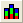

FAQ-1049 実際のX値の位置で積み上げ縦棒グラフをプロットする方法は？
最終更新日：2020/03/16
StackedColumn-actual-X
メニューの作図 > 基本の2Dグラフ：積み上げ縦棒、または積み上げ縦棒ボタン
で積み上げ縦棒グラフを作図したとき、Xが数値であっても、Originは自動的に行番号に対するプロットに切り替え、軸目盛ラベルをデータセットからのテキストに設定します。また、グラフ内の棒の間隔は一定になります。
実際のX値の位置で積み上げ縦棒グラフをプロットするには、
- メニューのウィンドウ：スクリプトウィンドウからスクリプトウィンドウを開きます。
- 次のスクリプトを実行してシステム変数DRXを0に設定します。その後、再度積み上げ縦棒グラフを作図します。
-
@DRX=0;
- Note:デフォルト設定に戻すには、DRXを16にします。
または、
- データセットを選択して線+シンボルグラフ（メニューの作図 > 基本の2Dグラフ：線+シンボル）を作図します。
- グラフをアクティブにしてメニューのフォーマット：作図の詳細（プロット属性）...で作図の詳細ダイアログを開きます。
- ダイアログの左下で作図形式を縦棒/横棒にします。
- 左側のパネルでレイヤレベルを選択します。積み上げ形式タブで累積オプションを選択します。OKをクリックします。
キーワード:横棒, 縦棒, 積み上げ縦棒, 積み上げ横棒, 実際のX, X軸, 実際のX値の位置